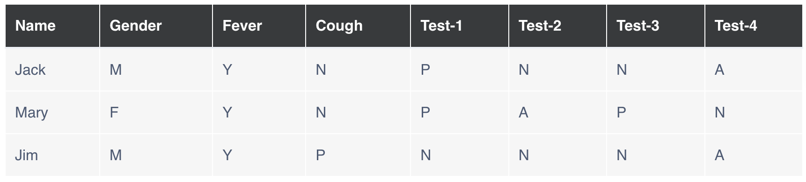

Machine Learning: July 2025 B
Unit 5: Clustering
Unit Notes
The objectives of this unit were to review the statistical concept of clustering, with a focus on K-means and agglomerative clustering, as well as evaluative standards for the same.
Exercise 1, Visualization 1: K-Means Clustering
Exercise 1, Visualization 2: K-Means Clustering
Exercise 2: Jaccard Coefficient Calculations

(Jack, Mary) = 0.33 | (Jack, Jim) = 0.67 | (Jim, Mary) = 0.75